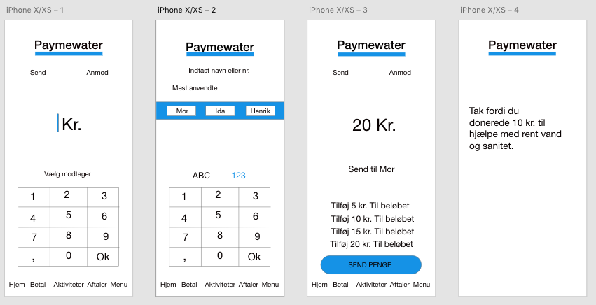

Opgavebeskrivelse:
I projektet for dette flow, skal du designe og skabe en prototype på en mobil app. Du vælger selv den type enhed/smartphone og tablet du udvikler til, såvel som operativsystem. Du skal bruge Adobe XD til at demonstrere skærmene i appen og deres flow samt bruge Adobe Illustrator til grafik til interfacet og Adobe Photoshop til billeder.
Du skal vælge en virksomhed eller organisation og forestille dig at de vil gå på markedet med et produkt/service, hvor samspil med ét eller flere af FNs verdensmål bliver et væsentligt element i produktets/servicens kvalitet for kunde eller bruger, samt hvor produkt/service naturligt har en app som interface for at få adgang til elementer af produkt/service.
Det er tematisk inspiration, eksemplerne viser ikke direkte relaterede apps. Men det kunne være en app til noget lignende, I forventes at arbejde med.
Du kan anvende FNs verdensmåls ikoner som inspirationskilde til dit design, men det er ikke et krav at dine ikoner er samme stil. Du skal udvikle dine egne unikke ikoner, som passer til den virksomhed og det event eller kampagne, hvor de skal anvendes.
Appen skal udvikles til både mobil og tablet og der skal være indhold i mindst 3 menupunkter og mindst 3 niveauer. Indhold skal være tilstrækkeligt til at brugertest kan gennemføres men generisk indhold og prosatekst kan være placeholder.
Der skal udvikles forslag til interface elementer herunder ikoner til appen, alle tegnet i Adobe Illustrator.
I skal teste, om brugerne forstår jeres design. I skal undersøge, hvordan I bedst organiserer indholdet i appen, ved hjælp af testmetoden kortsortering, samt om brugerne forstår hvordan appen fungerer, ved at gennemføre tænke-højt tests på den potentielle målgruppe.
Respons fra lærer til re-design:
"Teksten i appen skal ikke være større end overskriften. Du skal tænke på den skrifttype du har valgt. Du skal til en anden
gang have med i dine overvejelser at det kræver lidt at få selve appen til at virke optimalt, når man skal trykke sig videre."
App re-design:
Re-design af app

Jeg har ændret nogle af de lange sætninger så de er nemmere at overskue at læse.
Derudover har jeg ændret farverne. Jeg har ændret den grå til en mere lys så det ikke er så tungt at kigge på.
Jeg har ikke lavet den sådan at man kan trykke på tallene, skrive et beløb også vælge en modtager. Den skifter kun
side hvis man trykker på nogle bestemte ord.